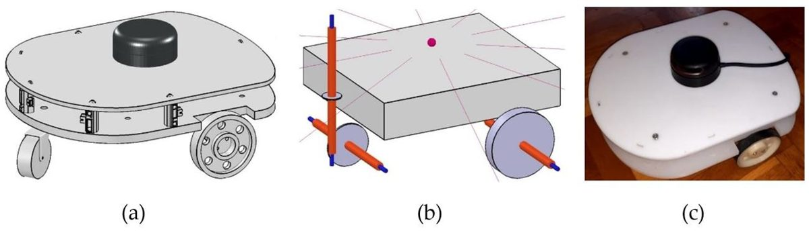
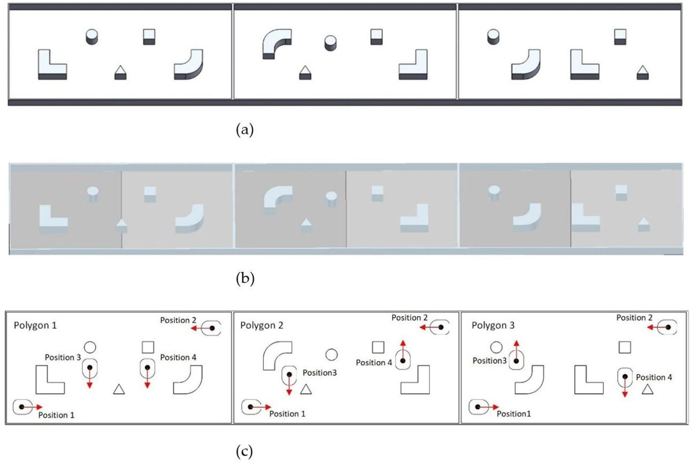
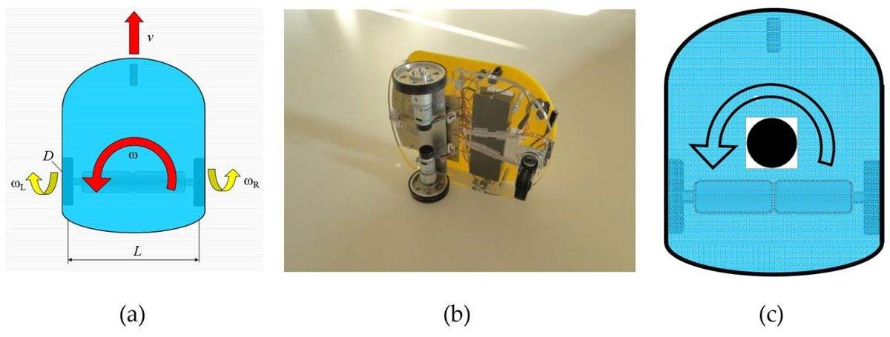
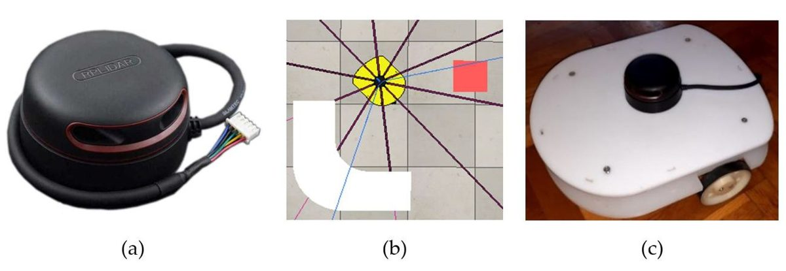
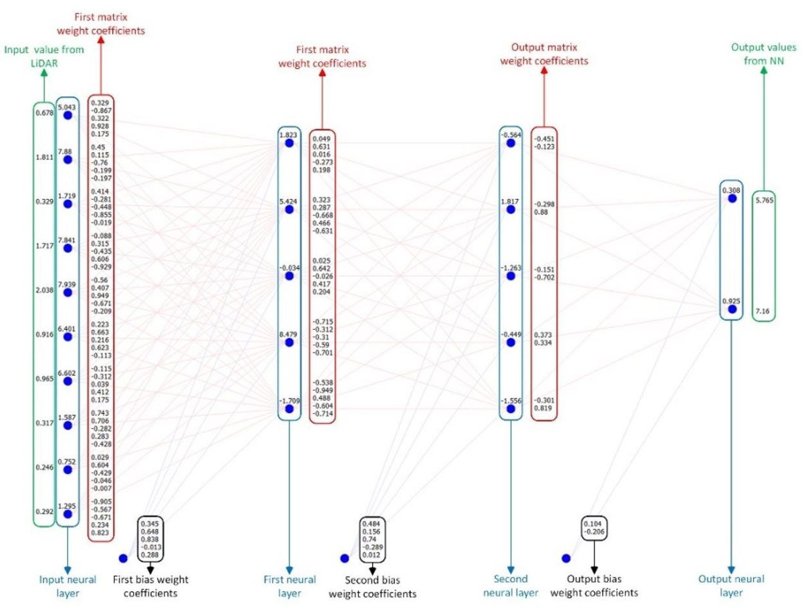
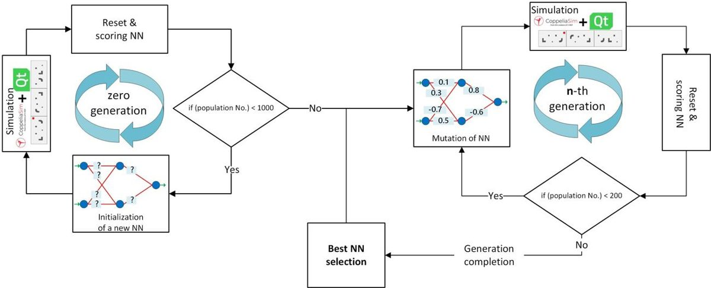
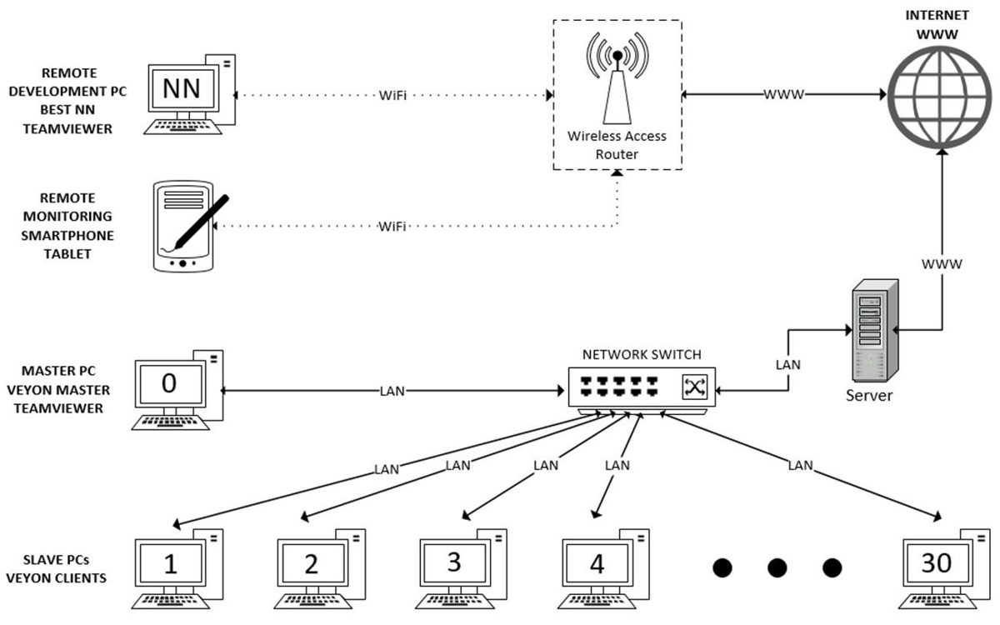
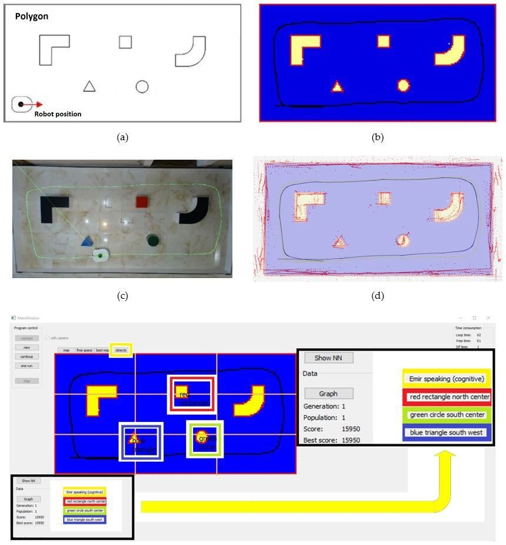
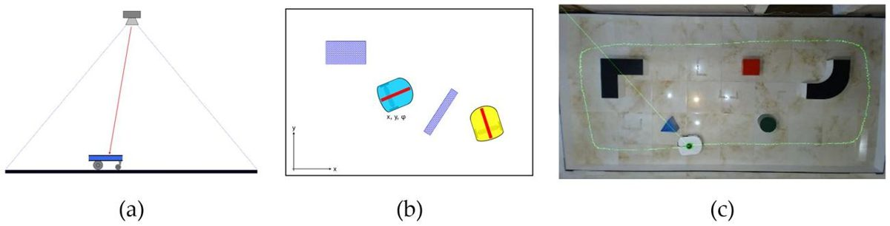
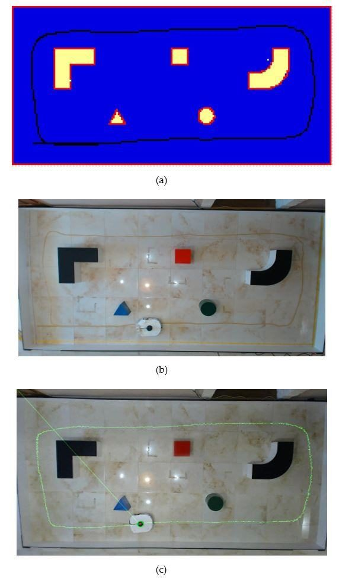

Mobilna robotika · kognitivni model okoline · neuroevolucija
eMIR na poligonu
eMIR je mobilni robot diferencijalnog pogona iz doktorata „Kognitivni model zatvorene okoline mobilnoga robota temeljen na mjerenjima”. Robot ne zna kamo ide. LiDAR mu daje deset udaljenosti, neuronska mreža iz njih računa brzine kotača, a genetski algoritam mrežu uči tako da robot istraži što više prostora bez sudara. Iz istraženog prostora nastaje karta, a iz karte opis: „crveni kvadrat sjeverno”.
Ovdje je cijeli pokus: poligon 4 × 2 m u tri konfiguracije s četiri početna položaja i četvrta, nepoznata, robot kao 3D CAD ili kao dinamički model iz CoppeliaSima, ručna vožnja, mreža uživo, kognitivna karta, učenje na bazenu računala i Sim-to-Real. Vježbe iz rada su u kartici Vježbe, a izvoz u Python i CoppeliaSim u kartici Kod.
Povezano: Vježba E1: kinematika, LiDAR, neuroevolucija · 2D simulator eMIR
Poligon i eMIR
Iteracija 0 · vrijeme petlje — (u radu: petlja 54 ms, od toga CoppeliaSim 53 ms, sl. 25)
Kognitivna karta i opis okoline
eMIR govori (kognitivni opis) — boja, oblik po tab. 2 i položaj u 3 × 3 područja:
Ocjena vožnje
Jedn. (18): Score = A·V̄ + B·ω̄ + Cēx + petlje + udaljenost + D·ᾱ.
Učenje: neuroevolucija na bazenu računala
Učenje nije pokrenuto.
Algoritam kao u radu: 0. generacija slučajnih mreža → svaka vozi na odabranim poligonima → najbolja i druga najbolja → križanje u omjeru ocjena → mutacija → n-ta generacija; najbolja se čuva (elitizam). Ishod ovisi o slučaju i zna zapeti (robot vozi ravno uz zid); tada pomaže „svi položaji”.
Neuronska mreža uživo
Tirkizno su pozitivne težine i aktivacije, crveno negativne. Lijevo su udaljenosti LiDAR-a, desno brzine kotača 0–10.
Kod: Python i CoppeliaSim
Zapis vožnji
Vježbe iz doktorata
Postavke
0–10 kao izlaz mreže; 10 = 4,61 rad/s. Ručno se smije i unatrag, mreža ne može.
[PROCJENA] Iznosi pogrešaka stvarnog robota su pretpostavke za nastavu; u radu nisu izmjereni.
Poligon u tvom prostoru
Skeniraj kod mobitelom (Chrome na Androidu): poligon 4 × 2 m s robotom stane na pod u stvarnoj veličini, a za manji prostor smanji mjerilo.
Usmjeri kameru prema podu i polako pomiči mobitel. Kad se pojavi krug, dodirni ga: poligon s robotom postavi se na pod. Gumb Vožnja pokreće robota.
Otvori u ChromeuProširena stvarnost radi u Chromeu na Androidu (WebXR). Na iPhoneu Safari to još ne podržava.
eMIR — podaci iz rada
| Naziv | eMIR — educational Mobile Intelligent Researcher; bijeli eMIR s reduktorima i = 71 (str. 21, 36–37) |
|---|---|
| Pogon | diferencijalni, neholonomski: 2 pogonska kotača i okretni kotač sprijeda (str. 43, sl. 7) |
| Vanjske mjere i masa | 300 × 250 mm, 3,15 kg sa senzorima i napajanjem (str. 66) |
| Kotači | D = 80 mm (R = 40 mm), razmak L = 240 mm (str. 66) |
| Motori | 2 × DC IG320071X0014, reduktor i = 71, drajver LMD18200T, PWM 10 bita (0–1023), 30–100 % (str. 68, 71–72, 79) |
| Brzine | kotač 0,733 okr/s = 4,61 rad/s; vmax = 185 mm/s; ωmax = 90 °/s (str. 66) |
| Enkoderi | 364 impulsa/s pri najvećoj brzini (str. 66, 71) |
| LiDAR | RPLIDAR A2: 360°, domet 12 m, 8000 uzoraka/s, 10 Hz; u mrežu ulazi 10 zraka svakih 36° (str. 35, 70, sl. 23) |
| Računalo | Raspberry Pi 4B, 4 GB; napajanje 5 V / 10 000 mAh i 12 V / 2000 mAh (str. 68–69, 100) |
| Kamere | Logitech C920 iznad poligona (provjera putanje, OpenCV); kamera na robotu 55° (u simulaciji 120°), isključena iz upravljanja (str. 38–39, 80) |
| Poligon | 4 × 2 m, zidovi i objekti 200 mm, 5 objekata, 3 konfiguracije za učenje × 4 početna položaja, 4. nepoznata za test (str. 38, 67, 85, sl. 5) |
Udaljenost d između osi kotača i točke C nije u radu; ovdje je os kotača 45 mm iza LiDAR-a [PROCJENA]. Raspored objekata očitan je sa sl. 5c; u radu nema koordinata.
Načela iz doktorata
Sedam ideja na kojima stoji pokus. Brojevi jednadžbi i stranica odnose se na disertaciju.
1. Kinematika diferencijalnog pogona
Robot ima dvije upravljane veličine (brzine kotača ωL, ωR) i tri koordinate položaja (x, y, θ), pa se ne može gibati bočno: ẏ·cos θ − ẋ·sin θ = 0 (jedn. 2).
v = R/2 · (ωR + ωL) · ω = R/L · (ωR − ωL)
ẋ = v·cos θ · ẏ = v·sin θ · θ̇ = ω (jedn. 13–15)
Položaj se računa u koracima dt = 50 ms, kao u algoritmu karte na str. 46.
2. LiDAR i kognitivna karta
LiDAR u točki C (težište robota) daje 10 udaljenosti, jednu svakih 36°. Iste vrijednosti u metrima ulaze u mrežu u simulaciji i na stvarnom robotu.
Karta poligona ima 200 × 100 ćelija po 2 cm. Fuzijom LiDAR-a i odometrije nastaje slobodni prostor i rubovi objekata. Objekti se razvrstavaju po omjeru površine obuhvatnog pravokutnika i objekta (tab. 2): trokut 2, krug 4/π, kvadrat 1, L 9/5, zaobljeni 18/(14 − π).
3. Neuronska mreža
Potpuno povezana mreža 10 – n – n – 2 (n = 5, 10 ili 15), napisana od nule u C++. Ulaz: 10 udaljenosti. Izlaz: brzine lijevog i desnog kotača 0–10.
ulazna: 16 / (1 + e0,55 − 3x) − 8 (sigmoidna, sl. 12) ili 7x do 1 m, zatim 7 (linearna, jedn. 20)
skriveni slojevi: LeakyReLU, x/5 za x ≤ 0 · izlaz: 10 / (1 + e−x)
Vožnja se prekida kad je bilo koja zraka ≤ 0,2 m ili izlaz ≤ 3,5 (sl. 12), kod sudara ili nakon 1000 iteracija (str. 56).
4. Funkcija ocjene
Score = A·V̄ + B·ω̄ + Cēx + (1000 − n̄)/2 + (1000 − d̄)/2 + D·ᾱ (jedn. 18)
A = B = 50, C = 1,000488, D = 1
Najveći utjecaj ima istraženost ēx: robot je nagrađen za prostor koji je vidio, a ne za cilj koji mu je zadan. Očekivani najveći rezultat je oko 16 000 bodova (str. 90).
[PROCJENA] Na grafovima rada „petlje” i „udaljenost” rastu prema 1000, pa simulator broji n/2 i d/2. Istraženost = ćelije od 2 cm kroz koje je zraka prošla do 1 m.
5. Genetski algoritam (neuroevolucija)
Nulta generacija: mreže sa slučajnim težinama u [−0,999; 0,999]. Svaka mreža vozi na tri poligona istodobno i dobije ocjenu.
Najbolja i druga najbolja mreža se križaju u omjeru svojih ocjena (sl. 14). Dijete se mutira: nekoliko nasumičnih težina dobije novu slučajnu vrijednost, na sl. 16 šest. Mutirana mreža postaje najbolja samo ako je bolja (sl. 15). Učenje se zaustavlja kad nastupi stagnacija.
6. Bazen računala
Učenje je raspodijeljeno na 30 računala (Veyon Master i Slave). Svako računalo odvrti svoj dio generacije, najbolja mreža se dijeli svima i slijedi nova generacija. Ubrzanje je oko 30 puta, jer je najsporija komunikacija Qt ↔ CoppeliaSim (str. 64–65, 85).
Na ovoj stranici bazen su jezgre tvog računala (Web Workers): broj radnika se bira u kartici Učenje.
7. Sim-to-Real
Mreža se uči u CoppeliaSimu na dinamičkom modelu „istovjetnom stvarnom”. Zatim se težine kao tekstualna datoteka prenose na Raspberry Pi stvarnog robota, bez ikakve druge upravljačke logike (str. 63, 78–79).
Putanja se provjerava kamerom iznad poligona. Putanje u simulaciji i stvarnosti su „gotovo identične” (str. 79), a mreža naučena na tri poligona uspjela je i na četvrtom, nepoznatom (str. 102).
Slike iz rada









